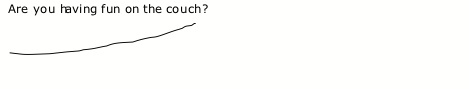

Determining where the boundaries fall between utterances is an important part of your job as a transcriber. Lots of segments of speech qualify as utterances: a word, a short phrase, or a complex sentence with many embedded clauses. Unfortunately, people don’t speak with periods, commas, and question marks to let you know when one utterance ends and another one begins. The following guidelines have been developed to help you break continuous human speech into single utterances that fit into Excel spreadsheet cells. It is in this format that we can further analyze human speech into words per utterance, clauses per utterance, relationships between clauses within an utterance, etc.
An utterance can be a word, a phrase, or an entire sentence. The following are all potential examples of utterances:
ok?
uhhuh.
not on the floor!
the pink one.
yeah, well, I thought she was going to, but she never did.
bugs lives outside, honey.
we don't bring them in the house.
If the speaker hesitates to find a word, treat it as one utterance, unless the speaker pauses for more than two seconds. If there is less than a two-second pause, put two dashes in for the hesitation and a space on either side of the dashes ( -- ). Any time there is a pause of more than two seconds, transcribe it as two separate utterances (see also Section 4.5.1).
| p_utts |
|---|
| put it in the – toy box. |
If the speaker interrupts herself to correct herself, treat it as one utterance, putting two dashes between the original and the corrected word(s) and a space on either side of the dashes ( -- ):
| p_utts |
|---|
| don’t do that, Nathan – Jake! |
If the speaker interrupts herself to express an entirely different thought, treat it as two separate utterances and put a space and two dashes ( --) after the first utterance:
| p_utts |
|---|
| why don’t you put it – |
| don’t do that! |
If the speaker has a false start in her speech, treat it as one utterance, and put two dashes surrounded by spaces ( -- ) between the repeated utterances. False starts are instances when a speaker begins to say something, hesitates, and then resumes saying the same thing:
| p_utts |
|---|
| will you – will you go to your room? |
In the case of false starts, if there is a two second or greater pause between the repeated phrases, then do start a new utterance:
| p_utts | context |
|---|---|
| will you – | 3-second pause |
| will you go to your room? |
If the speaker has a false start and then trails off without completing her sentence or phrase, just end the utterance with two dashes ( --).
If the speaker stumbles over his or her words while trying to formulate an utterance, still count this as a false start and transcribe the attempts on a single utterance line. To count as a false start, the words must be spoken very quickly or be otherwise clearly an attempt at verbalizing a single thought. For example:
| p_utts | c_utts |
|---|---|
| no – don’t – oh no! | |
| where – what – where did you put it? |
An utterance is never more than one conversational turn. When people are taking turns talking, having a conversation, a single utterance will never span over more than one person’s turn. (Recall that in Section 3.2, when a person is interrupted and doesn’t acknowledge the interruption, this is still a single conversational turn.)
An utterance is never more than one complete sentence long. A sentence is a segment of speech containing a subject and a predicate. Complete sentences include things like “the man is walking” and “I’m sleepy”. If sentences are joined by conjunction words (like “and”, “or”, “but”, “because”, “after”, “for”, “so”, “if”, “when”, etc.), then it’s okay to transcribe them together on a single utterance line, but if there are no conjunction words, the sentences should be separate utterances.
For example, the following could be utterances:
but you said you would!
the one that's right over there.
I'll go first, and then you can have a turn.
if I tag you, you have to go to jail!
I wanted to throw it but then I remembered not to because then I would get in trouble.
he keeps hiding!
And the following should never be transcribed as single utterances:
get your coat, it's time to go!
you know what, let's do this inside.
bring it to me later, I'm busy right now.
Especially in African-American Vernacular English (AAVE), it is common to create if-then constructions while omitting the words “if” and “then”. You might, for example, hear somebody say “you leave your jacket off, you’re going to get cold”, meaning “IF you leave your jacket off, THEN you’re going to get cold”. Transcribe constructions such as these on a single utterance line, even if the connecting words technically are not present.
In general, when phrases are related semantically and grammatically, they should be transcribed together as one utterance if there is less than a two second pause between them. For instance, the phrases “I’ll go first” and “and then you can have a turn” are related semantically because after “I’ll go first” is the time when you can have a turn, and the conjunction words “and then” connect the phrases to each other grammatically. Another example are the phrases “are you having fun” and “on the couch”. These are related semantically because “on the couch” is a place where you could have fun, and they’re related grammatically because it’s grammatically acceptable to put a prepositional phrase like “on the couch” at the end of a sentence like “are you having fun”.
In most cases, utterances like the ones above should be transcribed as follows:
| p_utts | c_utts |
|---|---|
| I’ll go first and then you can have a turn. | |
| are you having fun on the couch? |
But occasionally people will add something as sort of an after-thought that could have been related semantically and grammatically to the rest of the utterance, but isn’t part of the original train of thought. In cases where speaker adds a phrase more as an after-thought than as part of the original utterance, transcribe the phrases as separate utterances, like this:
| p_utts | c_utts |
|---|---|
| I’ll go first. | |
| and then you can have a turn. | |
| are you having fun? | |
| on the couch? |
But how can we determine whether two phrases are part of the same train of thought or not? Use the guidelines in 4.8.1 and 4.8.2 to determine whether you have strong enough evidence to break up two phrases that could be semantically and grammatically related.
If there is a two-second or longer pause in between phrases, transcribe them as two separate utterances instead of a single utterance, even if they are semantically and syntactically cohesive.
| p_utts | c_utts | context |
|---|---|---|
| are you having fun? | at least 2 full seconds of pause after “fun” | |
| on the couch? | ||
| I’ll go first. | at least 2 full seconds of pause after “first” | |
| and then you can have a turn. |
If two phrases are part of two totally separate intonational contours, transcribe them as two separate utterances instead of a single utterance. Intonational contour refers to the pattern the pitch of your voice makes when you utter questions, propositions, and commands. Linguists have formed nuanced and complex theories about the intonational contour patterns of different languages, but for the purposes of transcribing, you only need to know the following principles (which we will illustrate using the example of a question):
When you form a question in English, you usually raise the pitch of your voice at the end, like this:
The rising line represents the way your voice goes up at the end of the question. An utterance with this intonational contour pattern would be transcribed on one line.
If you form two distinct questions, however, your voice will do something like this:
Your voice’s pitch rises twice, because you’ve asked two questions with two intonational contours. This example would be transcribed as two utterances on two separate lines.
Sometimes you will encounter a complex intonational contour pattern, where there are two segments of a larger intonational pattern. Such a contour would look something like this:
The above example still has a single intonational contour, even though that contour is complex, and should be transcribed as a single utterance on a single line.
People often use tag words and phrases in their speech. A tag is a word or short phrase that frames or clarifies the rest of the sentence or phrase, and usually occurs at the beginning or end of an utterance.
When you encounter tags like the ones in the table below, err on the side of them on the same utterance line as the speech they accompany, instead of on their own separate line. The tags below (not an exhaustive list) either do not have a verb or are sentence fragments without a subject. Because they are not full sentences there is no prohibition against putting them on the same utterance line as another sentence. However, just as is the case with phrases that are connected structurally, there are times when you should transcribe tag words and phrases such as the ones below as separate utterances rather than as part of the same utterance as the speech they accompany. Use the principles outlined in 4.8.1 and 4.8.2 regarding pauses and intonational contours to decide when to transcribe a non-sentence tag word or phrase as its own separate utterance.
Examples of tag words and phrases:
| Tag word/phrase | Appearing at the beginning | Appearing at the end |
|---|---|---|
| ok | ok, can we go now? | I get it, ok? |
| honey | honey, will you put your toys away? | it’s in the kitchen, honey. |
| right | right, first the top, then the bottom. | put it in the oven, right? |
| well | well, not without your brother! | n/a |
| here | here, let me do this. | n/a |
| no | no, not the blue one! | n/a |
| oh boy | oh boy, you’re in for a treat. | n/a |
| my goodness | my goodness, that was a big burp! | n/a |
| Mommy | Mommy, help me! | I want down, Mommy! |
| remember | remember, no running in the kitchen. | I put those in your toy box, remember? |
| see | see, it’s not so scary. | it’s up on top, see? |
| look (at) | look at, they’re picking vegetables. | n/a |
At the end of a sentence, an inverted question can also be a tag. These tags are formed by taking the auxiliary verb (or “do” if there isn’t an explicit auxiliary verb) and forming a negated question from it. Err on the side of transcribing inverted tag questions on the same utterance line as the speech they accompany.
| Tag question | Appearing at the beginning | Appearing at the end |
|---|---|---|
| isn’t it? | n/a | that’s the right answer, isn’t it? |
| do we? | n/a | we don’t need to watch t+v right now, do we? |
| aren’t you? | n/a | you’re a little cranky today, aren’t you? |
| didn’t you? | n/a | you saw your friend at the store today, didn’t you? |
Sometimes you will hear complete sentences spoken like tags. Do NOT transcribe complete sentence tags on the same utterance line as another sentence, even if they really, really sound like they go together. This would be a violation of Rule 4.7.
| If a speaker says: | Transcribe it as: |
|---|---|
| I know, it’s so crazy! | I know. |
| it’s so crazy. | |
| I don’t know, maybe we should wait until after dinner. | I don’t know. |
| maybe we should wait until after dinner. | |
| you know what, let’s put the toys away first. | you know what? |
| let’s put the toys away first. | |
| there you go, it’s all fixed. | there you go. |
| it’s all fixed. | |
| you see, all three things are the same color. | you see? |
| all three things are the same color. |
You may notice that a subset of these tags (such as “I know” and “you see”) could actually be the beginning of a sentence without being a tag. For example, a speaker might say “I know it’s so crazy”, meaning “I know THAT it’s so crazy”. Most sentences that fall into this category contain verbs of perception or cognition, like “think”, “see”, “know”, “wish”, etc. In cases where a speaker means something like “I know that it’s so crazy” or “you see that all three things are the same color”, but has simply omitted the word “that”, put them on the same utterance line and do NOT break them up.
If a speaker keeps repeating a word or short phrase over and over again (e.g. “no no no, no no, no no no....no!” or “I won’t I won’t I won’t I won’t!”, or is counting, saying the alphabet, or reciting a list, use Rules 4.8.1 and 4.8.2 to establish utterance boundaries. If you are dealing with a short repeated sentence (like “I won’t”), then you have leave to break Rule 4.7 and put them on the same utterance line if:
- they are spoken rapidly
- they are part of a single intonational contour as defined in 4.8.2
- there is no discernible pause in between repetitions.
Basically, (a), (b), and (c) are to help you determine in an objective way whether to make it look in the transcript like the speaker kept uttering the same thing over and over again, or like they said one utterance with an emphatically repeated sentence in it. Whenever you have a repeated word or phrase, type it out according to the conventions in Rule 6.3.